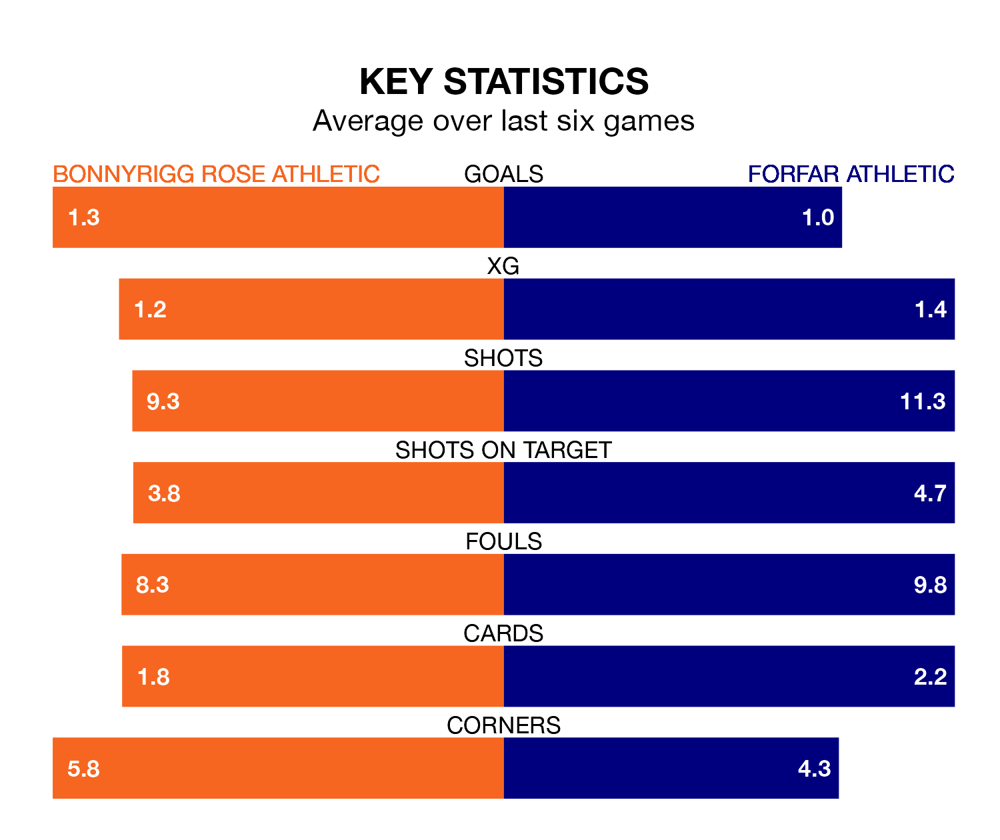

Bonnyrigg Rose Athletic host Forfar Athletic on Saturday at New Dundas Park in League Two.
In their last league match, on April 27, Bonnyrigg Rose drew with Stenhousemuir 1-1 away, with their goal scored by Bradley Barrett.
Forfar won, 2-0 at home against Stranraer, with Mark Whatley and Stuart Morrison on the scoresheet.
With Marc McCallum between the sticks, Forfar can rely on one of the league's safest pair of hands. He has kept 11 clean sheets in his 35 appearances this season, and only one other 'keeper – Stenhousemuir's Darren Jamieson – has been able to prevent the opposition scoring on more occasions in League Two.
In Bonnyrigg Rose's net, Paddy Martin has six clean sheets in 35 games. He has conceded a goal every 67 minutes, 20% more often than the 79 minutes between goals for McCallum.
In the last 10 years, Bonnyrigg Rose and Forfar have played each other on seven occasions. Bonnyrigg Rose won three of them, Forfar one, and they drew three times.
On average, Bonnyrigg Rose scored 1.0 goal and the Loons 0.7 in those matches.
Their last meeting was on January 27, when they played out a 0-0 draw.
Bonnyrigg Rose Athletic are eighth in the table after 35 games, of which they have won eight and drawn 12, earning 36 points.
Forfar Athletic are two places ahead of the hosts in sixth, with nine wins and 15 draws putting them on 42 points.
With 38 goals in 35 games so far this season, the Loons are the league's third-lowest scorers with 1.1 goals per game. But they are conceding fewer than average too, letting in 41 goals at a rate of 1.2 per game.
Bonnyrigg Rose are also below average scorers, with 1.2 goals per game, compared to a league average of 1.3. They have conceded 1.4 goals per game.
Bonnyrigg Rose are in disappointing form in League Two, with one win and three draws from their last six games.
With two wins and a draw over that period, the away side's form is slightly better – they have taken seven points from 18, compared to Bonnyrigg Rose Athletic's six.
Updated: 10:44 (UTC), 30/04/24